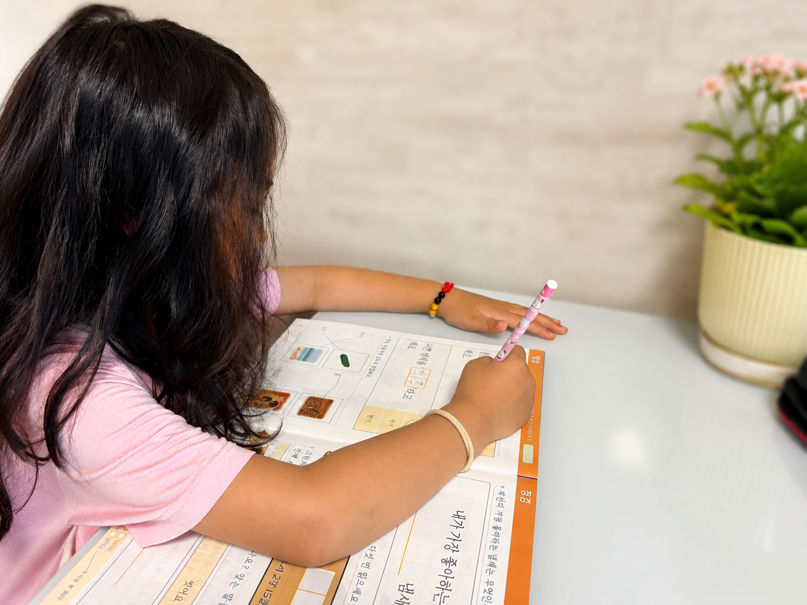
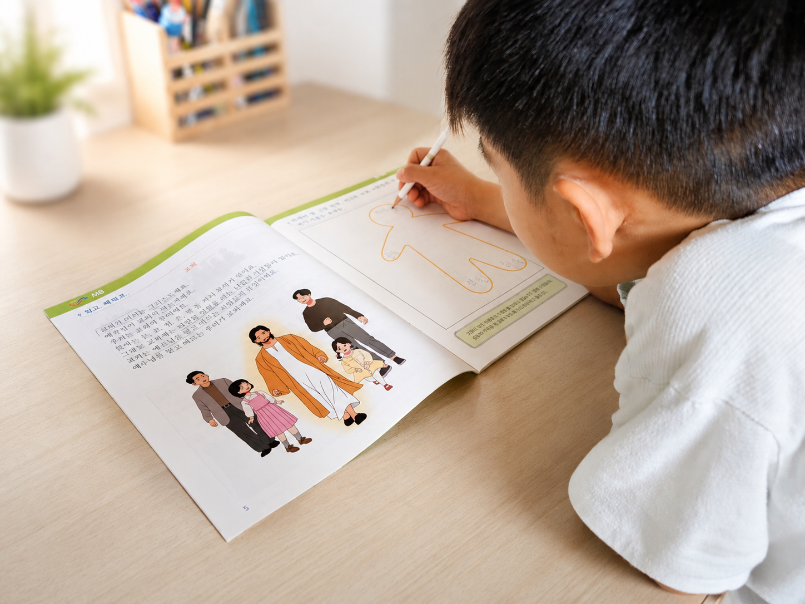
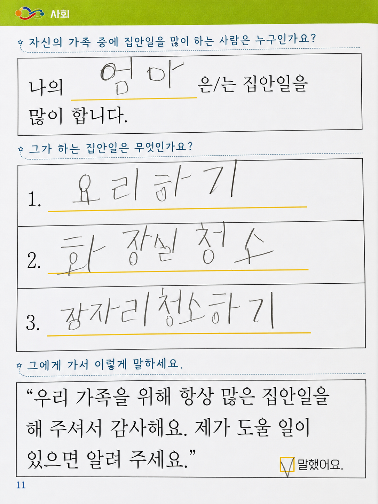
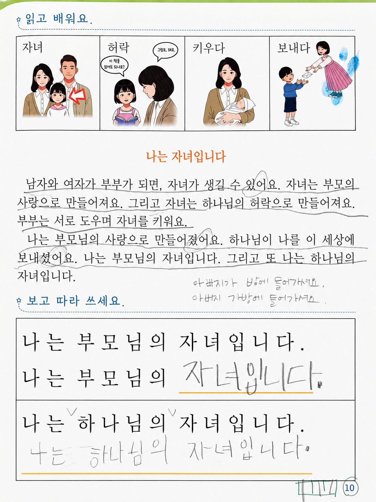
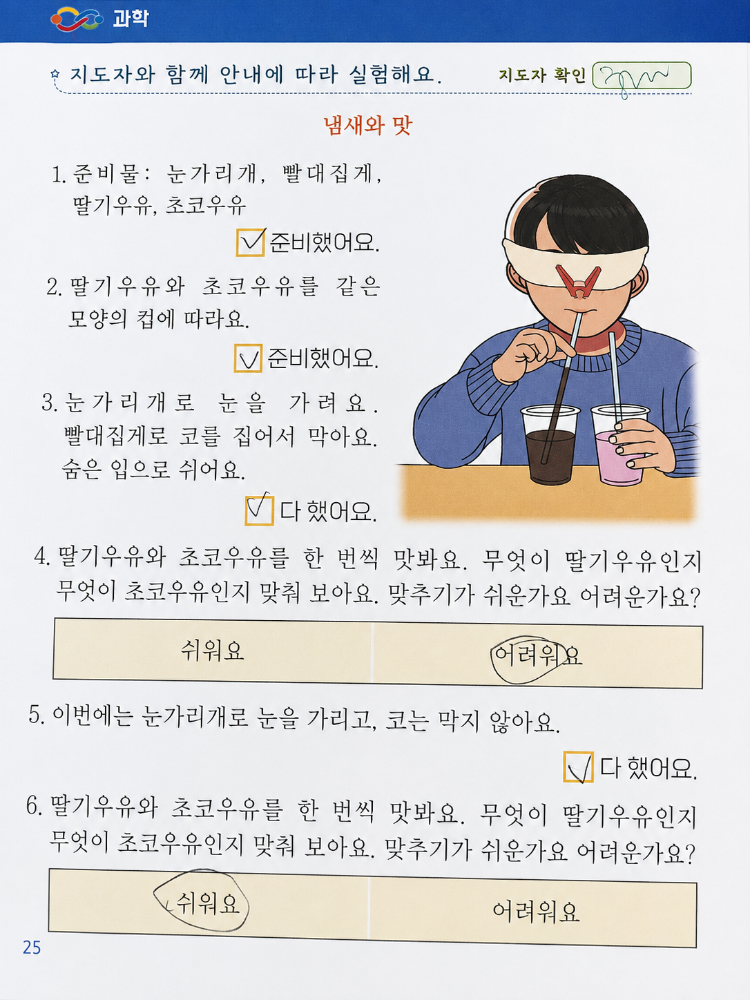
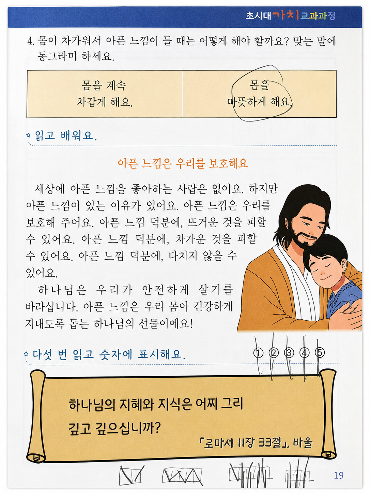
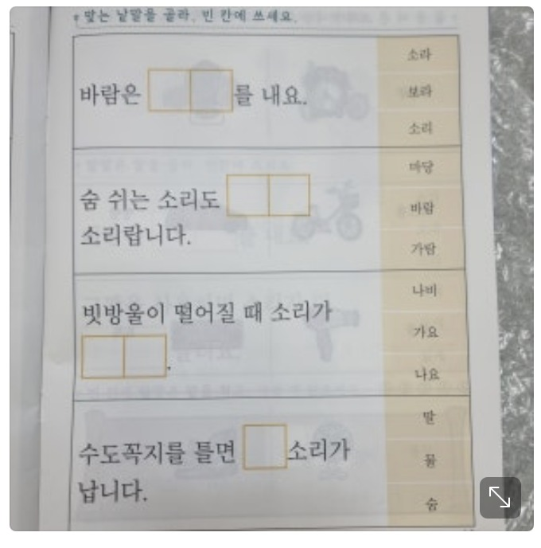

Learning Moments
함께 자라는 순간들
초시대가치교과서를 사용하는 실제 아이들의 모습입니다.






Trust
교재를 사용하는 사람들의 이야기
교재를 사용하는 분들의 이야기를 먼저 모아두는 영역입니다.
★★★★★
홈스쿨링을 하며 교재를 찾던 중, 성경적 가치가 담긴 교재라는 점이 가장 마음에 들었습니다.
접기 / 펼치기
홈스쿨링을 하며 국어·영어 외에도 다른 과목의 교재를 사용하고 싶었는데, 기독교 세계관이 자연스럽게 담긴 교재는 쉽게 찾기 어려웠습니다. 초시대 가치 교과과정의 사회·과학은 말씀과 성경적 가치관이 함께 들어 있어, 아이가 지식을 배우는 동시에 믿음의 관점도 함께 익힐 수 있다는 점이 좋았습니다. 부모가 함께 살펴보아도 안심하고 사용할 수 있는 교재라는 점도 만족스러웠습니다. 사회·과학 교과 속에서도 하나님의 사랑이 느껴진다는 표현이 인상적이었습니다.
★★★★★
아이와 함께 하기 아주 잘 만들어진 교재라서, 다음 학기 교재도 계속 기다리고 있습니다.
접기 / 펼치기
1학년 1학기에 이어 2학기도 구입했어요. 가뭄의 단비같은 교과서입니다. 앞으로 계속 출간 기다립니다.
★★★★★
하나님 중심의 내용이 아이와 저 모두에게 감동과 유익을 주는 교재입니다.
접기 / 펼치기
하나님 중심적이고 재미있고 유익한 내용으로 구성해 주셔서 아이와 즐겁게 배우고 있습니다. 내용이 너무 좋아서 어른인 저에게도 감동이 됩니다. (예: 헬렌 켈러 이야기, 운동주의 시 등등) 아이에게 여러 번 읽어보게 하고 있는데 초시대 가치가 자녀의 마음에 잘 새겨지기를 기도하게 됩니다. 자연스럽게 하나님과 예수님을 우리의 삶과 연결시켜 주기 때문에 성경적 세계관이 자라나는 데 도움이 될 것 같습니다. 꼭 저희처럼 홈스쿨 가정이 아니더라도 자녀와 천천히 해 보시면 분명 많은 걸 배우고 나눌 수 있으리라 생각합니다.
★★★★★
사회성과 인성을 균형 있게 지도해주는 구성이라 부모의 고민을 덜어준 교재입니다.
접기 / 펼치기
초시대 가치 교과과정 사회 1-1권까지 한 세트로 되어 있는 교재는 자녀의 사회성과 인성을 어떻게 하면 올바르고 건강하게 균형 있게 지도해 줄 수 있을까 하는 저의 고민을 시원하게 해소해 주었습니다. 자녀가 접하게 되는 관계 속에서 나와 다른 사람을 이해하고 배려하는 마음을 배워가고 있습니다. 9살 아들의 놀이에 맞는 다양한 이야기와 그림, 그리고 간단한 실험과 게임들로 구성된 교재는 아이들이 학습에 흥미를 가지고 쉽게 접근할 수 있었습니다. 하루 10분, 2~3페이지 교재를 함께 펼치면서 아들과의 의사소통이 이전보다 훨씬 더 풍성해지는 유익도 얻었습니다. 자녀가 앞으로 만나게 될 수많은 사회와 관계 속에서 나와 타인을 건강하게 지키고 받아들이기를 원하는 부모님들께 이 교재를 강력 추천합니다.
★★★★★
아이와 함께 읽으며 자연스럽게 대화를 이어갈 수 있어서 만족스러웠습니다.
접기 / 펼치기
교재를 함께 펼치면 아이가 부담 없이 반응하고, 부모도 자연스럽게 설명을 이어갈 수 있어서 좋았습니다. 단순히 문제를 푸는 시간이 아니라 대화를 나누는 시간이 되어 더욱 의미 있게 느껴졌습니다. 아이와 함께 배우는 흐름이 부드럽게 이어져서 홈스쿨링이나 가정 학습에 특히 잘 맞는다고 느꼈습니다.
★★★★★
하나님 중심 사회 과학이란 이런거군요! 기대했던 것보다 더욱 놀랍습니다.
접기 / 펼치기
좋은 책 만들어주셔서 감사합니다 ♡ 과학 1-1~5에는 오감을 중심으로 과학을 배울 수 있어서 좋았고, 헬렌 켈러의 이야기도 참 인상 깊었습니다. 사회 1-1~5에는 하나님 중심으로 나, 가족, 가정, 교회, 이웃, 자연을 배울 수 있어 자녀들과 함께 배우며 기도하기에도 참 좋다고 느꼈습니다.
4학년인 첫째와도 함께 공부해 보고 싶을 만큼 구성도 마음에 들었습니다. TATA 교재와 비슷한 재질과 구성이라는 느낌도 있었고, 점검 - 스스로 시험 - 성장 시험으로 이어지는 흐름도 인상적이었습니다.





앞으로 사진이 더 추가되면 같은 카드 형식으로 이어 붙이면 됩니다.